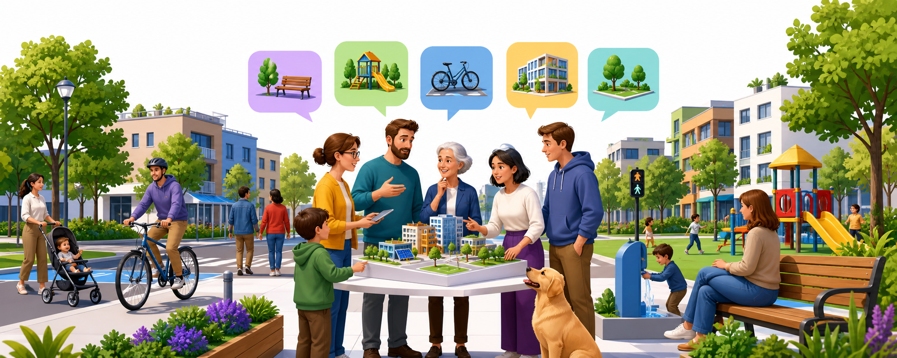

Aktualności
Rusza nabór projektów mieszkańców
Przygotuj opis, lokalizację i szacunkowy koszt. W razie wątpliwości skorzystaj z dyżurów konsultacyjnych lub punktu pomocy w urzędzie.
Złóż projektEdycja 2027
Zgłoś swój projekt, sprawdź listę zadań i zagłosuj na pomysły, które zmienią najbliższą okolicę. Ten serwis jest gotowy do podmiany logo, zdjęć i lokalnych danych miasta.
Przygotuj opis, lokalizację i szacunkowy koszt. W razie wątpliwości skorzystaj z dyżurów konsultacyjnych lub punktu pomocy w urzędzie.
Złóż projektCo warto wiedzieć
Mieszkańcy zgłaszają pomysły, a potem wybierają projekty finansowane z miejskiej puli.
Reguły zależą od miasta, dlatego ekran zostawia miejsce na lokalne wymagania i dokumenty.
Serwis prowadzi mieszkańca przez etap zgłoszeń, weryfikację, listę projektów i głosowanie.
Jak zgłosić projekt?
Opisz problem, wskaż miejsce, dodaj koszt i wyślij projekt do weryfikacji. Najważniejsza akcja ma być widoczna od razu, tak jak w najlepszych serwisach BO.
Ile kosztuje miasto?
Wzorem konkurencji pokazujemy tematykę przez duże, przyjazne ilustracje: zieleń, mobilność, dostępność, sport, kultura i sąsiedzkie spotkania.

Parki kieszonkowe, ławki, drzewa, retencja i cień w upalne dni.
Przejścia, drogi rowerowe, stojaki i doświetlenie tras do szkół.
Podjazdy, czytelna informacja, kontrast i udogodnienia dla wszystkich mieszkańców.
Mapa realizacji
Mapa jest celowo schematyczna. W docelowym wdrożeniu podmienisz ją na integrację GIS albo prostą mapę z pinezkami.
Harmonogram
Kolorowy pas etapów jest jednym z najmocniejszych elementów referencji. Tutaj pełni tę samą rolę: od razu pokazuje, gdzie jesteśmy w procesie.
od 15.05 do 21.06
od 24.06 do 04.09
do 24.09
od 04.10 do 27.10
do 06.11
Budżet krok po kroku
Opisz potrzebę, wskaż lokalizację i dodaj szacunkowy koszt.
Urzędnicy publikują status, uwagi i decyzję dla każdego projektu.
Mieszkańcy wybierają zadania dla swojego miasta lub dzielnicy.
Po wynikach serwis pokazuje etap prac, koszty i lokalizację.
To miejsce na lokalne komunikaty urzędu: dyżury, zmiany terminów, wyniki i informacje o konsultacjach.
Miasto zaprasza mieszkańców do zgłaszania pomysłów na działania w przestrzeni publicznej, kulturze, sporcie, edukacji i zieleni.
Przejdź do formularzaW punktach miejskich można skonsultować opis projektu, kosztorys i wymagane załączniki.
Sprawdź zasadyZgłoś zadanie
Najkrótsza ścieżka mieszkańca powinna kończyć się konkretną akcją, nie kolejną ścianą tekstu.
Zaproponuj projekt